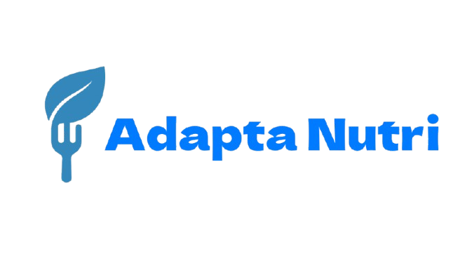

// Sobre Mim
Sou estudante do 3º ano do curso técnico em Informática no IFMT e atualmente estagiário do professor Gleiner.
Tenho interesse em tecnologia e na área da saúde. Estou em constante aprendizado para desenvolver minhas habilidades.

// Meus Projetos

O Adapta Nutri é um aplicativo voltado para oferecer acompanhamento nutricional acessível e personalizado, especialmente para pessoas com deficiência física, em reabilitação, idosos e quem busca melhorar a alimentação de forma segura.
- Cálculo de IMC e metabolismo basal
- Recomendações nutricionais personalizadas
- Interface acessível e intuitiva

O PASTIF é uma solução digital para controle e gestão de pastagens, permitindo que agricultores cadastrem, visualizem e acompanhem o status de seus pastos de forma prática e eficiente.
- Gestão de pastagens e rodízio de animais
- Agendamento de transferências
- Visualização organizada dos pastos